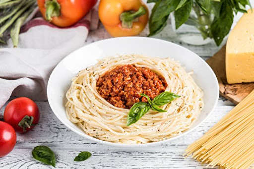
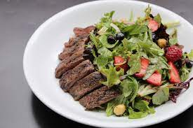
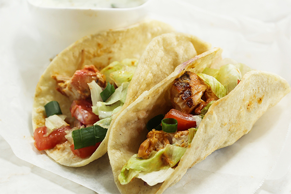
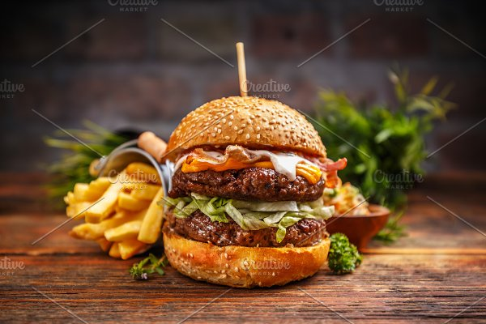
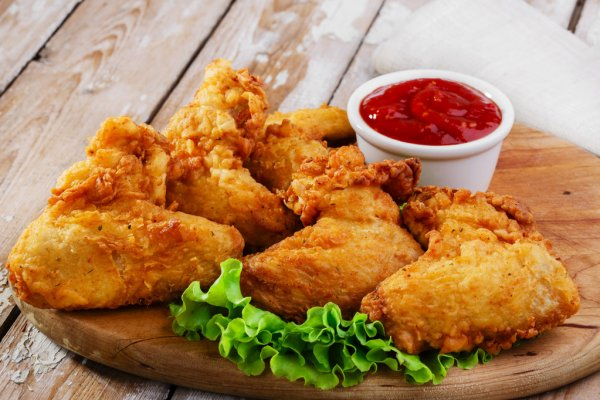

pizza with black olives! This pizza has a salty taste for the olives that you will like a lot.

Creamy Beef Pasta is one of those classic pasta dinners that is comforting and nostalgic

Steak salad with juicy slices of seasoned beef on a bed of colorful greens and crunchy vegetables

Beef Tacos recipe : Enjoy a Mexican feast with this recipe for Beef Tacos

burger with fries

fried chicken wings are marinated in buttermilk, then coated in seasoned flour and deep fried to golden brown perfection